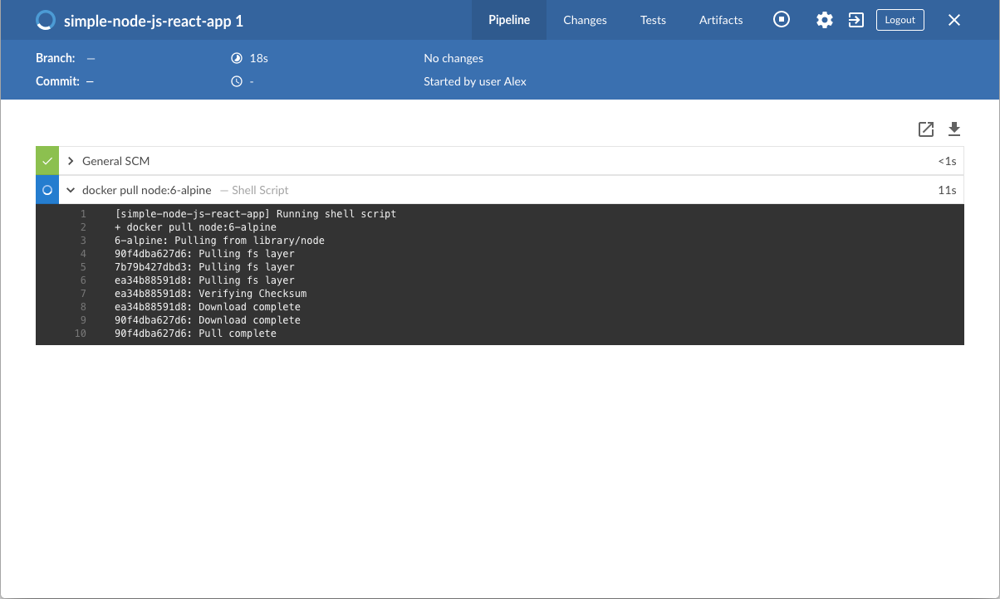
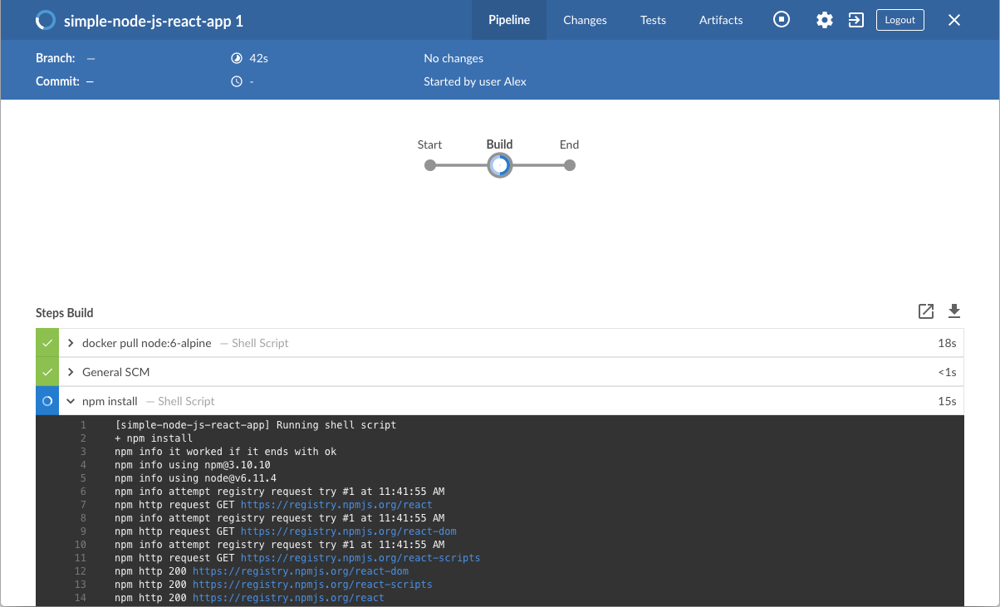
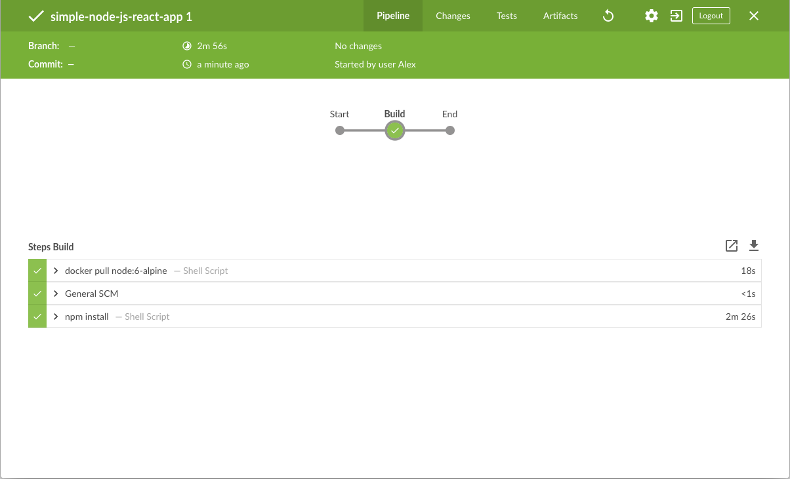
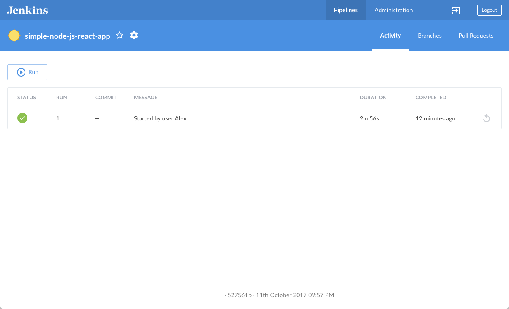
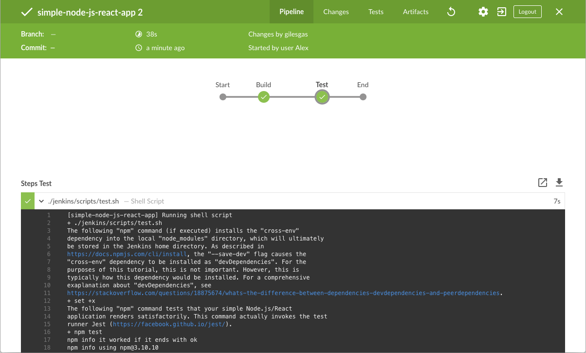
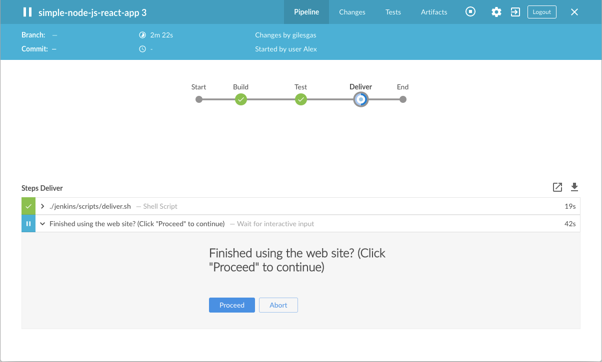
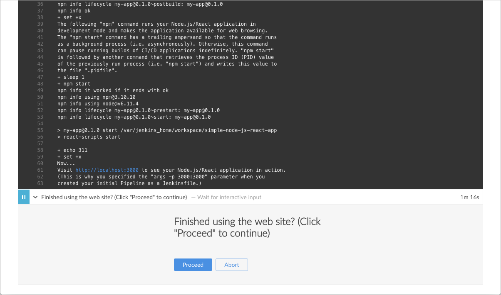
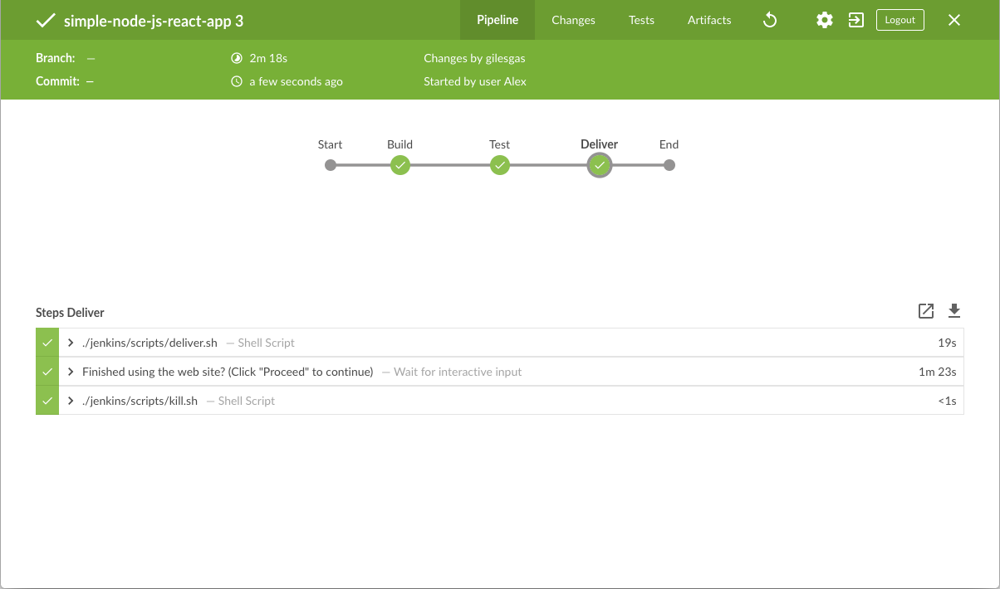
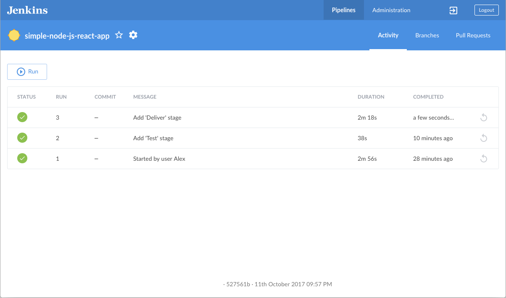

docker network create jenkinsBuild a Node.js and React app with npm
Table of Contents
This tutorial shows you how to use Jenkins to orchestrate building a simple Node.js and React application with the Node Package Manager (npm).
If you are a Node.js and React developer who is new to CI/CD concepts, or you might be familiar with these concepts but don’t know how to implement building your application using Jenkins, then this tutorial is for you.
The simple Node.js and React application (which you’ll obtain from a sample repository on GitHub) generates a web page with the content "Welcome to React" and is accompanied by a test to check that the application renders satisfactorily.
Duration: This tutorial takes 20-40 minutes to complete (assuming you’ve already met the prerequisites below). The exact duration will depend on the speed of your machine and whether or not you’ve already run Jenkins in Docker from another tutorial.
You can stop this tutorial at any point in time and continue from where you left off.
If you’ve already run though another tutorial, you can skip the Prerequisites and Run Jenkins in Docker sections below and proceed on to forking the sample repository. (Just ensure you have Git installed locally.) If you need to restart Jenkins, simply follow the restart instructions in Stopping and restarting Jenkins and then proceed on.
Prerequisites
For this tutorial, you will require:
-
A macOS, Linux or Windows machine with:
-
256 MB of RAM, although more than 2 GB is recommended.
-
10 GB of drive space for Jenkins and your Docker images and containers.
-
-
The following software installed:
-
Docker - Read more about installing Docker in the Installing Docker section of the Installing Jenkins page.
Note: If you use Linux, this tutorial assumes that you are not running Docker commands as the root user, but instead with a single user account that also has access to the other tools used throughout this tutorial. -
Git and optionally GitHub Desktop.
-
Run Jenkins in Docker
In this tutorial, you’ll be running Jenkins as a Docker container from the
jenkins/jenkins Docker
image.
To run Jenkins in Docker, follow the relevant instructions below for either macOS and Linux or Windows.
You can read more about Docker container and image concepts in the Docker section of the Installing Jenkins page.
On macOS and Linux
-
Open up a terminal window.
-
Create a bridge network in Docker using the following
docker network createcommand: -
In order to execute Docker commands inside Jenkins nodes, download and run the
docker:dindDocker image using the followingdocker runcommand:docker run \ --name jenkins-docker \(1) --rm \(2) --detach \(3) --privileged \(4) --network jenkins \(5) --network-alias docker \(6) --env DOCKER_TLS_CERTDIR=/certs \(7) --volume jenkins-docker-certs:/certs/client \(8) --volume jenkins-data:/var/jenkins_home \(9) --publish 2376:2376 \(10) --publish 3000:3000 --publish 5000:5000 \(11) docker:dind \(12) --storage-driver overlay2 (13)1 ( Optional ) Specifies the Docker container name to use for running the image. By default, Docker will generate a unique name for the container. 2 ( Optional ) Automatically removes the Docker container (the instance of the Docker image) when it is shut down. 3 ( Optional ) Runs the Docker container in the background. This instance can be stopped later by running docker stop jenkins-docker.4 Running Docker in Docker currently requires privileged access to function properly. This requirement may be relaxed with newer Linux kernel versions. 5 This corresponds with the network created in the earlier step. 6 Makes the Docker in Docker container available as the hostname dockerwithin thejenkinsnetwork.7 Enables the use of TLS in the Docker server. Due to the use of a privileged container, this is recommended, though it requires the use of the shared volume described below. This environment variable controls the root directory where Docker TLS certificates are managed. 8 Maps the /certs/clientdirectory inside the container to a Docker volume namedjenkins-docker-certsas created above.9 Maps the /var/jenkins_homedirectory inside the container to the Docker volume namedjenkins-data. This will allow for other Docker containers controlled by this Docker container’s Docker daemon to mount data from Jenkins.10 ( Optional ) Exposes the Docker daemon port on the host machine. This is useful for executing dockercommands on the host machine to control this inner Docker daemon.11 Exposes ports 3000 and 5000 from the docker in docker container, used by some of the tutorials. 12 The docker:dindimage itself. This image can be downloaded before running by using the command:docker image pull docker:dind.13 The storage driver for the Docker volume. See "Docker storage drivers" for supported options. Note: If copying and pasting the command snippet above does not work, try copying and pasting this annotation-free version here:
docker run --name jenkins-docker --rm --detach \ --privileged --network jenkins --network-alias docker \ --env DOCKER_TLS_CERTDIR=/certs \ --volume jenkins-docker-certs:/certs/client \ --volume jenkins-data:/var/jenkins_home \ --publish 3000:3000 --publish 5000:5000 --publish 2376:2376 \ docker:dind --storage-driver overlay2 -
Customise official Jenkins Docker image, by executing below two steps:
-
Create Dockerfile with the following content:
FROM jenkins/jenkins:2.375.1 USER root RUN apt-get update && apt-get install -y lsb-release RUN curl -fsSLo /usr/share/keyrings/docker-archive-keyring.asc \ https://download.docker.com/linux/debian/gpg RUN echo "deb [arch=$(dpkg --print-architecture) \ signed-by=/usr/share/keyrings/docker-archive-keyring.asc] \ https://download.docker.com/linux/debian \ $(lsb_release -cs) stable" > /etc/apt/sources.list.d/docker.list RUN apt-get update && apt-get install -y docker-ce-cli USER jenkins RUN jenkins-plugin-cli --plugins "blueocean docker-workflow" -
Build a new docker image from this Dockerfile and assign the image a meaningful name, e.g. "myjenkins-blueocean:2.375.1-1":
docker build -t myjenkins-blueocean:2.375.1-1 .Keep in mind that the process described above will automatically download the official Jenkins Docker image if this hasn’t been done before.
-
-
Run your own
myjenkins-blueocean:2.375.1-1image as a container in Docker using the followingdocker runcommand:docker run \ --name jenkins-blueocean \(1) --detach \(2) --network jenkins \(3) --env DOCKER_HOST=tcp://docker:2376 \(4) --env DOCKER_CERT_PATH=/certs/client \ --env DOCKER_TLS_VERIFY=1 \ --publish 8080:8080 \(5) --publish 50000:50000 \(6) --volume jenkins-data:/var/jenkins_home \(7) --volume jenkins-docker-certs:/certs/client:ro \(8) --volume "$HOME":/home \(9) --restart=on-failure \(10) --env JAVA_OPTS="-Dhudson.plugins.git.GitSCM.ALLOW_LOCAL_CHECKOUT=true" \(11) myjenkins-blueocean:2.375.1-1 (12)1 ( Optional ) Specifies the Docker container name for this instance of the Docker image. 2 ( Optional ) Runs the current container in the background (i.e. "detached" mode) and outputs the container ID. If you do not specify this option, then the running Docker log for this container is output in the terminal window. 3 Connects this container to the jenkinsnetwork defined in the earlier step. This makes the Docker daemon from the previous step available to this Jenkins container through the hostnamedocker.4 Specifies the environment variables used by docker,docker-compose, and other Docker tools to connect to the Docker daemon from the previous step.5 Maps (i.e. "publishes") port 8080 of the current container to port 8080 on the host machine. The first number represents the port on the host while the last represents the container’s port. Therefore, if you specified -p 49000:8080for this option, you would be accessing Jenkins on your host machine through port 49000.6 ( Optional ) Maps port 50000 of the current container to port 50000 on the host machine. This is only necessary if you have set up one or more inbound Jenkins agents on other machines, which in turn interact with your jenkins-blueoceancontainer (the Jenkins "controller"). Inbound Jenkins agents communicate with the Jenkins controller through TCP port 50000 by default. You can change this port number on your Jenkins controller through the Configure Global Security page. If you were to change the TCP port for inbound Jenkins agents of your Jenkins controller to 51000 (for example), then you would need to re-run Jenkins (via thisdocker run …command) and specify this "publish" option with something like--publish 52000:51000, where the last value matches this changed value on the Jenkins controller and the first value is the port number on the machine hosting the Jenkins controller. Inbound Jenkins agents communicate with the Jenkins controller on that port (52000 in this example). Note that WebSocket agents do not need this configuration.7 Maps the /var/jenkins_homedirectory in the container to the Docker volume with the namejenkins-data. Instead of mapping the/var/jenkins_homedirectory to a Docker volume, you could also map this directory to one on your machine’s local file system. For example, specifying the option
--volume $HOME/jenkins:/var/jenkins_homewould map the container’s/var/jenkins_homedirectory to thejenkinssubdirectory within the$HOMEdirectory on your local machine, which would typically be/Users/<your-username>/jenkinsor/home/<your-username>/jenkins. Note that if you change the source volume or directory for this, the volume from thedocker:dindcontainer above needs to be updated to match this.8 Maps the /certs/clientdirectory to the previously createdjenkins-docker-certsvolume. This makes the client TLS certificates needed to connect to the Docker daemon available in the path specified by theDOCKER_CERT_PATHenvironment variable.9 Maps the $HOMEdirectory on the host (i.e. your local) machine (usually the/Users/<your-username>directory) to the/homedirectory in the container. Used to access local changes to the tutorial repository.10 Configure the Docker container restart policy to restart on failure as described in the blog post. 11 Allow local checkout for the tutorial. See SECURITY-2478 for the reasons why this argument should not be used on a production installation. 12 The name of the Docker image, which you built in the previous step. Note: If copying and pasting the command snippet above does not work, try copying and pasting this annotation-free version here:
docker run --name jenkins-blueocean --detach \ --network jenkins --env DOCKER_HOST=tcp://docker:2376 \ --env DOCKER_CERT_PATH=/certs/client --env DOCKER_TLS_VERIFY=1 \ --publish 8080:8080 --publish 50000:50000 \ --volume jenkins-data:/var/jenkins_home \ --volume jenkins-docker-certs:/certs/client:ro \ --volume "$HOME":/home \ --restart=on-failure \ --env JAVA_OPTS="-Dhudson.plugins.git.GitSCM.ALLOW_LOCAL_CHECKOUT=true" \ myjenkins-blueocean:2.375.1-1 -
Proceed to the Post-installation setup wizard.
On Windows
The Jenkins project provides a Linux container image, not a Windows container image.
Be sure that your Docker for Windows installation is configured to run Linux Containers rather than Windows Containers.
See the Docker documentation for instructions to switch to Linux containers.
Once configured to run Linux Containers, the steps are:
-
Open up a command prompt window and similar to the macOS and Linux instructions above do the following:
-
Create a bridge network in Docker
docker network create jenkins -
Run a docker:dind Docker image
docker run --name jenkins-docker --detach ^ --privileged --network jenkins --network-alias docker ^ --env DOCKER_TLS_CERTDIR=/certs ^ --volume jenkins-docker-certs:/certs/client ^ --volume jenkins-data:/var/jenkins_home ^ --publish 3000:3000 --publish 5000:5000 --publish 2376:2376 ^ docker:dind -
Customise official Jenkins Docker image, by executing below two steps:
-
Create Dockerfile with the following content:
FROM jenkins/jenkins:2.375.1 USER root RUN apt-get update && apt-get install -y lsb-release RUN curl -fsSLo /usr/share/keyrings/docker-archive-keyring.asc \ https://download.docker.com/linux/debian/gpg RUN echo "deb [arch=$(dpkg --print-architecture) \ signed-by=/usr/share/keyrings/docker-archive-keyring.asc] \ https://download.docker.com/linux/debian \ $(lsb_release -cs) stable" > /etc/apt/sources.list.d/docker.list RUN apt-get update && apt-get install -y docker-ce-cli USER jenkins RUN jenkins-plugin-cli --plugins "blueocean docker-workflow" -
Build a new docker image from this Dockerfile and assign the image a meaningful name, e.g. "myjenkins-blueocean:2.375.1-1":
docker build -t myjenkins-blueocean:2.375.1-1 .Keep in mind that the process described above will automatically download the official Jenkins Docker image if this hasn’t been done before.
-
-
Run your own
myjenkins-blueocean:2.375.1-1image as a container in Docker using the followingdocker runcommand:docker run --name jenkins-blueocean --detach ^ --network jenkins --env DOCKER_HOST=tcp://docker:2376 ^ --env DOCKER_CERT_PATH=/certs/client --env DOCKER_TLS_VERIFY=1 ^ --volume jenkins-data:/var/jenkins_home ^ --volume jenkins-docker-certs:/certs/client:ro ^ --volume "%HOMEDRIVE%%HOMEPATH%":/home ^ --restart=on-failure ^ --env JAVA_OPTS="-Dhudson.plugins.git.GitSCM.ALLOW_LOCAL_CHECKOUT=true" ^ --publish 8080:8080 --publish 50000:50000 myjenkins-blueocean:2.375.1-1 -
Proceed to the Setup wizard.
Accessing the Docker container
If you have some experience with Docker and you wish or need to access your
Docker container through a terminal/command prompt using the
docker exec
command, you can add an option like --name jenkins-tutorial to the docker exec command.
That will access the Jenkins Docker container named "jenkins-tutorial".
This means you could access your docker container (through a separate
terminal/command prompt window) with a docker exec command like:
docker exec -it jenkins-blueocean bash
Accessing the Docker logs
There is a possibility you may need to access the Jenkins console log, for instance, when Unlocking Jenkins as part of the Post-installation setup wizard.
The Jenkins console log is easily accessible through the terminal/command
prompt window from which you executed the docker run … command.
In case if needed you can also access the Jenkins console log through the
Docker logs of
your container using the following command:
docker logs <docker-container-name>
Your <docker-container-name> can be obtained using the docker ps command.
Accessing the Jenkins home directory
There is a possibility you may need to access the Jenkins home directory, for
instance, to check the details of a Jenkins build in the workspace
subdirectory.
If you mapped the Jenkins home directory (/var/jenkins_home) to one on your
machine’s local file system (i.e. in the docker run … command
above), then you can access the
contents of this directory through your machine’s usual terminal/command prompt.
Otherwise, if you specified the --volume jenkins-data:/var/jenkins_home option in
the docker run … command, you can access the contents of the Jenkins home
directory through your container’s terminal/command prompt using the
docker container exec
command:
docker container exec -it <docker-container-name> bash
As mentioned above,
your <docker-container-name> can be obtained using the
docker container ls
command. If you specified the
--name jenkins-blueocean option in the docker container run …
command above (see also
Accessing the Jenkins/Blue
Ocean Docker container), you can simply use the docker container exec command:
docker container exec -it jenkins-blueocean bash
Setup wizard
Before you can access Jenkins, there are a few quick "one-off" steps you’ll need to perform.
Unlocking Jenkins
When you first access a new Jenkins instance, you are asked to unlock it using an automatically-generated password.
-
After the 2 sets of asterisks appear in the terminal/command prompt window, browse to
http://localhost:8080and wait until the Unlock Jenkins page appears.
-
Display the Jenkins console log with the command:
docker logs jenkins-blueocean -
From your terminal/command prompt window again, copy the automatically-generated alphanumeric password (between the 2 sets of asterisks).

-
On the Unlock Jenkins page, paste this password into the Administrator password field and click Continue.
Customizing Jenkins with plugins
After unlocking Jenkins, the Customize Jenkins page appears.
On this page, click Install suggested plugins.
The setup wizard shows the progression of Jenkins being configured and the suggested plugins being installed. This process may take a few minutes.
Creating the first administrator user
Finally, Jenkins asks you to create your first administrator user.
-
When the Create First Admin User page appears, specify your details in the respective fields and click Save and Finish.
-
When the Jenkins is ready page appears, click Start using Jenkins.
Notes:-
This page may indicate Jenkins is almost ready! instead and if so, click Restart.
-
If the page doesn’t automatically refresh after a minute, use your web browser to refresh the page manually.
-
-
If required, log in to Jenkins with the credentials of the user you just created and you’re ready to start using Jenkins!
Stopping and restarting Jenkins
Throughout the remainder of this tutorial, you can stop your Docker container by running:
docker stop jenkins-blueocean jenkins-dockerTo restart your Docker container:
-
Run the same
docker run …commands you ran for macOS, Linux or Windows above. -
Browse to
http://localhost:8080. -
Wait until the log in page appears and log in.
Fork and clone the sample repository
Obtain the simple "Welcome to React" Node.js and React application from GitHub, by forking the sample repository of the application’s source code into your own GitHub account and then cloning this fork locally.
-
Ensure you are signed in to your GitHub account. If you don’t yet have a GitHub account, sign up for a free one on the GitHub website.
-
Fork the
simple-node-js-react-npm-appon GitHub into your local GitHub account. If you need help with this process, refer to the Fork A Repo documentation on the GitHub website for more information. -
Clone your forked
simple-node-js-react-npm-apprepository (on GitHub) locally to your machine. To begin this process, do either of the following (where<your-username>is the name of your user account on your operating system):-
If you have the GitHub Desktop app installed on your machine:
-
In GitHub, click the green Clone or download button on your forked repository, then Open in Desktop.
-
In GitHub Desktop, before clicking Clone on the Clone a Repository dialog box, ensure Local Path for:
-
macOS is
/Users/<your-username>/Documents/GitHub/simple-node-js-react-npm-app -
Linux is
/home/<your-username>/GitHub/simple-node-js-react-npm-app -
Windows is
C:\Users\<your-username>\Documents\GitHub\simple-node-js-react-npm-app
-
-
-
Otherwise:
-
Open up a terminal/command line prompt and
cdto the appropriate directory on:-
macOS -
/Users/<your-username>/Documents/GitHub/ -
Linux -
/home/<your-username>/GitHub/ -
Windows -
C:\Users\<your-username>\Documents\GitHub\(although use a Git bash command line window as opposed to the usual Microsoft command prompt)
-
-
Run the following command to continue/complete cloning your forked repo:
git clone https://github.com/YOUR-GITHUB-ACCOUNT-NAME/simple-node-js-react-npm-app
whereYOUR-GITHUB-ACCOUNT-NAMEis the name of your GitHub account.
-
-
Create your Pipeline project in Jenkins
-
Go back to Jenkins, log in again if necessary and click create new jobs under Welcome to Jenkins!
Note: If you don’t see this, click New Item at the top left. -
In the Enter an item name field, specify the name for your new Pipeline project (e.g.
simple-node-js-react-npm-app). -
Scroll down and click Pipeline, then click OK at the end of the page.
-
( Optional ) On the next page, specify a brief description for your Pipeline in the Description field (e.g.
An entry-level Pipeline demonstrating how to use Jenkins to build a simple Node.js and React application with npm.) -
Click the Pipeline tab at the top of the page to scroll down to the Pipeline section.
-
From the Definition field, choose the Pipeline script from SCM option. This option instructs Jenkins to obtain your Pipeline from Source Control Management (SCM), which will be your locally cloned Git repository.
-
From the SCM field, choose Git.
-
In the Repository URL field, specify the directory path of your locally cloned repository above, which is from your user account/home directory on your host machine, mapped to the
/homedirectory of the Jenkins container - i.e.-
For macOS -
/home/Documents/GitHub/simple-node-js-react-npm-app -
For Linux -
/home/GitHub/simple-node-js-react-npm-app -
For Windows -
/home/Documents/GitHub/simple-node-js-react-npm-app
-
-
Click Save to save your new Pipeline project. You’re now ready to begin creating your
Jenkinsfile, which you’ll be checking into your locally cloned Git repository.
Create your initial Pipeline as a Jenkinsfile
You’re now ready to create your Pipeline that will automate building your
Node.js and React application in Jenkins. Your Pipeline will be created as a
Jenkinsfile, which will be committed to your locally cloned Git repository
(simple-node-js-react-npm-app).
This is the foundation of "Pipeline-as-Code", which treats the continuous delivery pipeline as a part of the application to be versioned and reviewed like any other code. Read more about Pipeline and what a Jenkinsfile is in the Pipeline and Using a Jenkinsfile sections of the User Handbook.
First, create an initial Pipeline to download a Node Docker image and run it as a Docker container (which will build your simple Node.js and React application). Also add a "Build" stage to the Pipeline that begins orchestrating this whole process.
-
Using your favorite text editor or IDE, create and save new text file with the name
Jenkinsfileat the root of your localsimple-node-js-react-npm-appGit repository. -
Copy the following Declarative Pipeline code and paste it into your empty
Jenkinsfile:pipeline { agent { docker { image 'node:lts-bullseye-slim' (1) args '-p 3000:3000' (2) } } stages { stage('Build') { (3) steps { sh 'npm install' (4) } } } }1 This imageparameter (of theagentsection’sdockerparameter) downloads thenode:lts-bullseye-slimDocker image (if it’s not already available on your machine) and runs this image as a separate container. This means that:-
You’ll have separate Jenkins and Node containers running locally in Docker.
-
The Node container becomes the agent that Jenkins uses to run your Pipeline project. However, this container is short-lived - its lifespan is only that of the duration of your Pipeline’s execution.
2 This argsparameter makes the Node container (temporarily) accessible through port 3000. The significance of this is explained in thejenkins/scripts/deliver.shfile of your cloned repository, and is covered in a subsequent section of this tutorial.3 Defines a stage(directive) calledBuildthat appears on the Jenkins UI.4 This shstep (of thestepssection) executes thenpmcommand to ensure that all dependencies required to run your application have been downloaded to thenode_modulesworkspace directory (within the/var/jenkins_home/workspace/simple-node-js-react-npm-appdirectory in the Jenkins container). -
-
Save your edited
Jenkinsfileand commit it to your localsimple-node-js-react-npm-appGit repository. E.g. Within thesimple-node-js-react-npm-appdirectory, run the commands:
git add .
then
git commit -m "Add initial Jenkinsfile" -
Go back to Jenkins again, log in again if necessary and click Open Blue Ocean on the left to access Jenkins’s Blue Ocean interface.
-
In the This job has not been run message box, click Run, then quickly click the OPEN link which appears briefly at the lower-right to see Jenkins building your Pipeline project. If you weren’t able to click the OPEN link, click the row on the main Blue Ocean interface to access this feature.
Note: You may need to wait several minutes for this first run to complete. After making a clone of your localsimple-node-js-react-npm-appGit repository itself, Jenkins:-
Initially queues the project to be run on the agent.
-
Downloads the Node Docker image and runs it in a container on Docker.

-
Runs the
Buildstage (defined in theJenkinsfile) on the Node container. During this time,npmdownloads many dependencies necessary to run your Node.js and React application, which will ultimately be stored in thenode_modulesworkspace directory (within the Jenkins home directory).
The Blue Ocean interface turns green if Jenkins built your Node.js and React application successfully.

-
-
Click the X at the top-right to return to the main Blue Ocean interface.

Add a test stage to your Pipeline
-
Go back to your text editor/IDE and ensure your
Jenkinsfileis open. -
Copy and paste the following Declarative Pipeline syntax immediately under the
Buildstage:stage('Test') { steps { sh './jenkins/scripts/test.sh' } }so that you end up with:
pipeline { agent { docker { image 'node:lts-bullseye-slim' args '-p 3000:3000' } } stages { stage('Build') { steps { sh 'npm install' } } stage('Test') { (1) steps { sh './jenkins/scripts/test.sh' (2) } } } }1 Defines a stage(directive) calledTestthat appears on the Jenkins UI.2 This shstep (of thestepssection) runs the shell scripttest.shlocated in thejenkins/scriptsdirectory from the root of thesimple-node-js-react-npm-apprepository. Explanations about what this script does are covered in thetest.shfile itself. As a general principle, it’s a good idea to keep your Pipeline code (i.e. theJenkinsfile) as tidy as possible and place more complex build scripting steps into separate shell script files like thetest.shfile. This ultimately facilitates the maintenance of your Pipeline, especially if it gains more complexity. -
Save your edited
Jenkinsfileand commit it to your localsimple-node-js-react-npm-appGit repository. E.g. Within thesimple-node-js-react-npm-appdirectory, run the commands:
git stage .
then
git commit -m "Add 'Test' stage" -
Go back to Jenkins again, log in again if necessary and ensure you’ve accessed Jenkins’s Blue Ocean interface.
-
Click Run at the top left, then quickly click the OPEN link which appears briefly at the lower-right to see Jenkins running your amended Pipeline project. If you weren’t able to click the OPEN link, click the top row on the Blue Ocean interface to access this feature.
Note: You’ll notice from this run that Jenkins no longer needs to download the Node Docker image. Instead, Jenkins only needs to run a new container from the Node image downloaded previously. Also, from now on, no (new)npmdependencies should need to be downloaded during the "Build" stage. Therefore, running your Pipeline this subsequent time should be much faster.
If your amended Pipeline ran successfully, here’s what the Blue Ocean interface should look like. Notice the additional "Test" stage. You can click on the previous "Build" stage circle to access the output from that stage.
-
Click the X at the top-right to return to the main Blue Ocean interface.
Add a final deliver stage to your Pipeline
-
Go back to your text editor/IDE and ensure your
Jenkinsfileis open. -
Copy and paste the following Declarative Pipeline syntax immediately under the
Teststage of yourJenkinsfile:stage('Deliver') { steps { sh './jenkins/scripts/deliver.sh' input message: 'Finished using the web site? (Click "Proceed" to continue)' sh './jenkins/scripts/kill.sh' } }so that you end up with:
pipeline { agent { docker { image 'node:lts-buster-slim' args '-p 3000:3000' } } stages { stage('Build') { steps { sh 'npm install' } } stage('Test') { steps { sh './jenkins/scripts/test.sh' } } stage('Deliver') { (1) steps { sh './jenkins/scripts/deliver.sh' (2) input message: 'Finished using the web site? (Click "Proceed" to continue)' (3) sh './jenkins/scripts/kill.sh' (4) } } } }1 Defines a new stage called Deliverthat appears on the Jenkins UI.2 This shstep (of thestepssection) runs the shell scriptdeliver.shlocated in thejenkins/scriptsdirectory from the root of thesimple-node-js-react-npm-apprepository. Explanations about what this script does are covered in thedeliver.shfile itself.3 This inputstep (provided by the Pipeline: Input Step plugin) pauses the running build and prompts the user (with a custom message) to proceed or abort.4 This shstep runs the shell scriptkill.sh, also located in thejenkins/scriptsdirectory. Explanations about what this script does are covered in thekill.shfile itself. -
Save your edited
Jenkinsfileand commit it to your localsimple-node-js-react-npm-appGit repository. E.g. Within thesimple-node-js-react-npm-appdirectory, run the commands:
git stage .
then
git commit -m "Add 'Deliver' stage" -
Go back to Jenkins again, log in again if necessary and ensure you’ve accessed Jenkins’s Blue Ocean interface.
-
Click Run at the top left, then quickly click the OPEN link which appears briefly at the lower-right to see Jenkins running your amended Pipeline project. If you weren’t able to click the OPEN link, click the top row on the Blue Ocean interface to access this feature.
If your amended Pipeline ran successfully, here’s what the Blue Ocean interface should look like. Notice the additional "Deliver" stage. Click on the previous "Test" and "Build" stage circles to access the outputs from those stages.
-
Ensure you are viewing the "Deliver" stage (click it if necessary), then click the green
./jenkins/scripts/deliver.shstep to expand its content and scroll down until you see thehttp://localhost:3000link.
-
Click the
http://localhost:3000link to view your Node.js and React application running (in development mode) in a new web browser tab. You should see a page/site with the title Welcome to React on it.
Tip: If you’re feeling a little adventurous, you can try accessing the terminal/command prompt of your Jenkins Docker container, then using vi editor, tweak and save theApp.jssource file and see the results appear on the Welcome to React page. To do this, run the following commands:docker exec -it <docker-container-name> bash (1) cd /var/jenkins_home/workspace/simple-node-js-react-npm-app/src (2) vi App.js (3)1 This command provides access to the terminal/command prompt of your Jenkins Docker container. The <docker-container-name>can be obtained using the commanddocker ps. Otherwise, it would bejenkins-tutorials(if you specified this in the command you used to run this container above - i.e.--name jenkins-tutorials).2 Once in the container, change directory to the Node.js and React source directory (in the Jenkins workspace directory within Jenkins home). 3 Access, edit and save changes to your application’s App.jsfile using vi editor. -
When you are finished viewing the page/site, click the Proceed button to complete the Pipeline’s execution.

-
Click the X at the top-right to return to the main Blue Ocean interface, which lists your previous Pipeline runs in reverse chronological order.

Wrapping up
Well done! You’ve just used Jenkins to build a simple Node.js and React application with npm!
The "Build", "Test" and "Deliver" stages you created above are the basis for building more complex Node.js and React applications in Jenkins, as well as Node.js and React applications that integrate with other technology stacks.
Because Jenkins is extremely extensible, it can be modified and configured to handle practically any aspect of build orchestration and automation.
To learn more about what Jenkins can do, check out:
-
The Tutorials overview page for other introductory tutorials.
-
The User Handbook for more detailed information about using Jenkins, such as Pipelines (in particular Pipeline syntax) and the Blue Ocean interface.
-
The Jenkins blog for the latest events, other tutorials and updates.
Please submit your feedback about this page through this quick form.
Alternatively, if you don't wish to complete the quick form, you can simply indicate if you found this page helpful?
See existing feedback here.